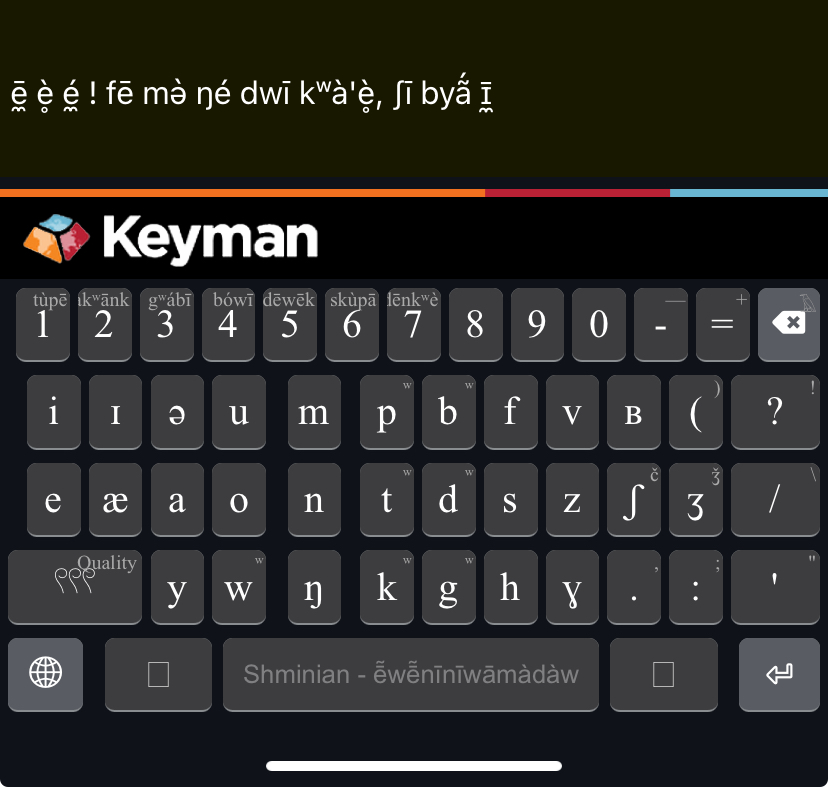
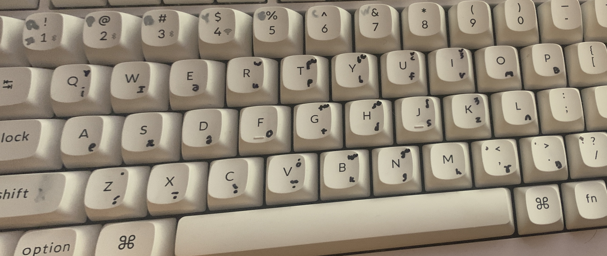

shmine.com
pāčābə̄wēyʒw̥
Keyboard
To type in Shminian yourself, download Keyman for Windows, Mac, Linux, or your mobile device. Then install the ē̃wē̃nīnīwāmàdàw keyboard.

pāčābə̄wēyʒw̥
Keyboard
To type in Shminian yourself, download Keyman for Windows, Mac, Linux, or your mobile device. Then install the ē̃wē̃nīnīwāmàdàw keyboard.
You'll see the layouts for keyboard and mobile devices. They are organized by manner and place of articulation, though it gets a little crowded with all the alveolar/postalveolar consonants.
I considered having the keyboard make different tones by using shift/alt for high or low tones, but as it is I didn't have space to add [y] or [w] so I couldn't.
And on mobile I would have preferred if long-pressing
the different tones for each vowel open a submenu where each direction gives you each tone (if you've used the Japanese non-romaji keyboard you know what I mean, each consonant opens a little thing and each direction lets you
get from NA to NI/NO/NU/NE ez pz but alas, it wasnt meant to be...)
The only issue would be that I can't get the shortcuts for the labial consonants or the color words to work on mobile, but someday, I may.
You apply tone markers by pressing/holding the 𓍤 key. A press gets you neutral tone, holding and swiping up is high tone, down is low, right is nasal, left is stressed, bottom right is short/syllabic.
Hold down the key and swipe up for any of the characters up in the top right corner.

You got it. I believe in you. Shift C is the key for stressed tone quality. Alt + Number gives you color words.
